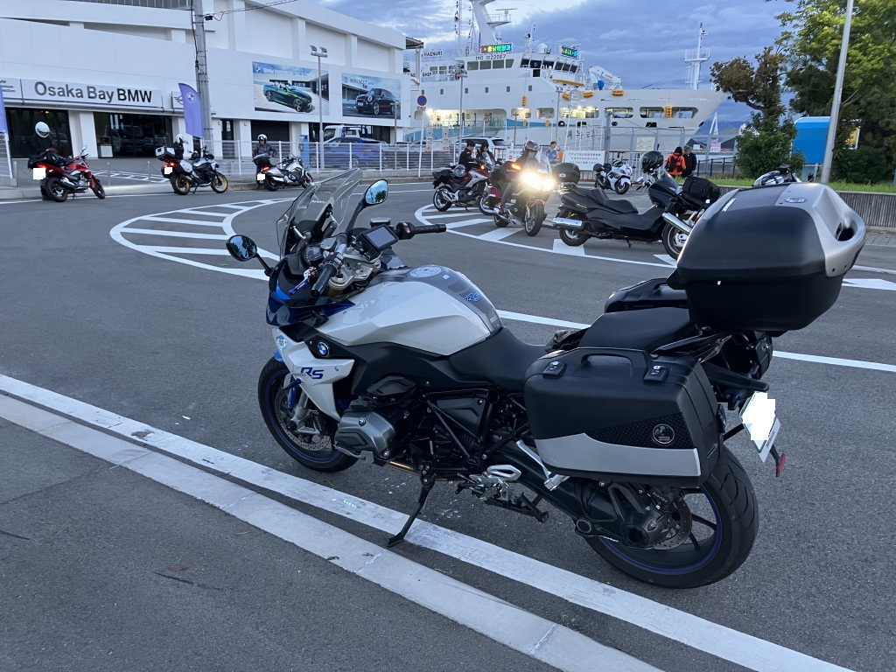
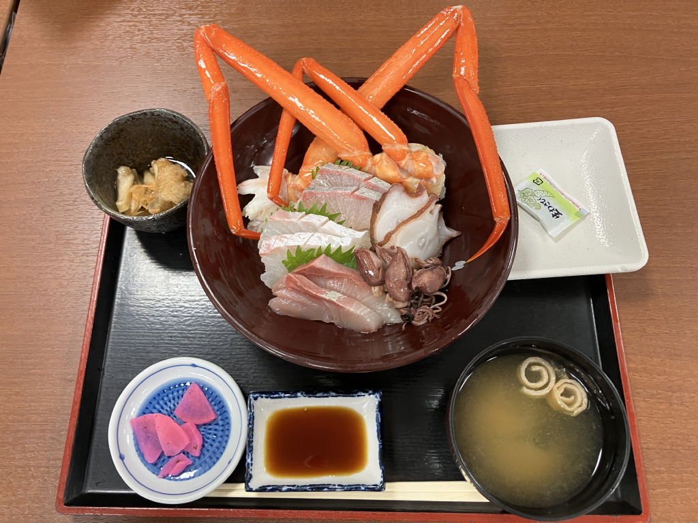
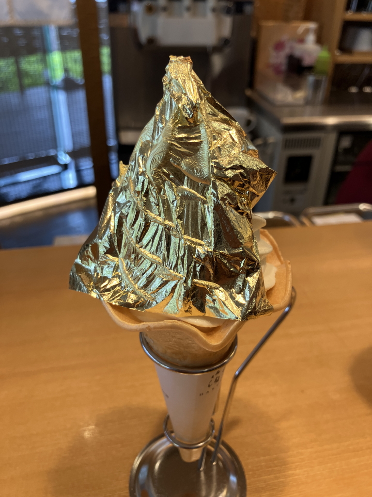
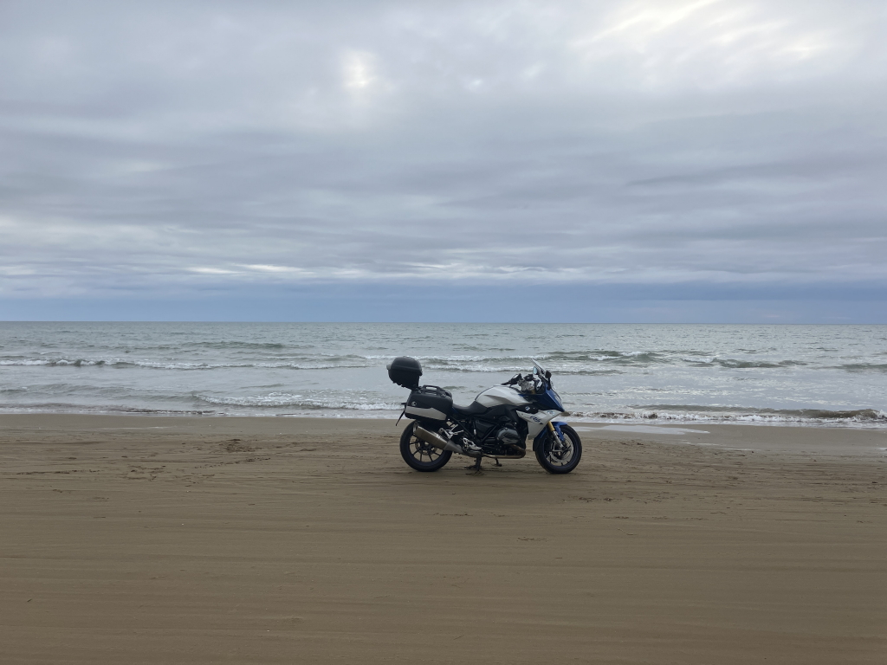
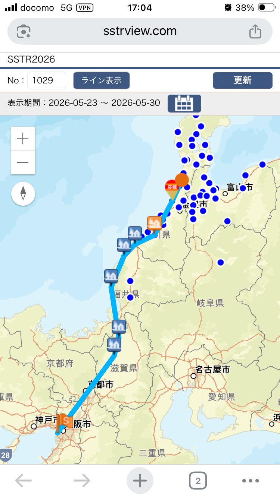
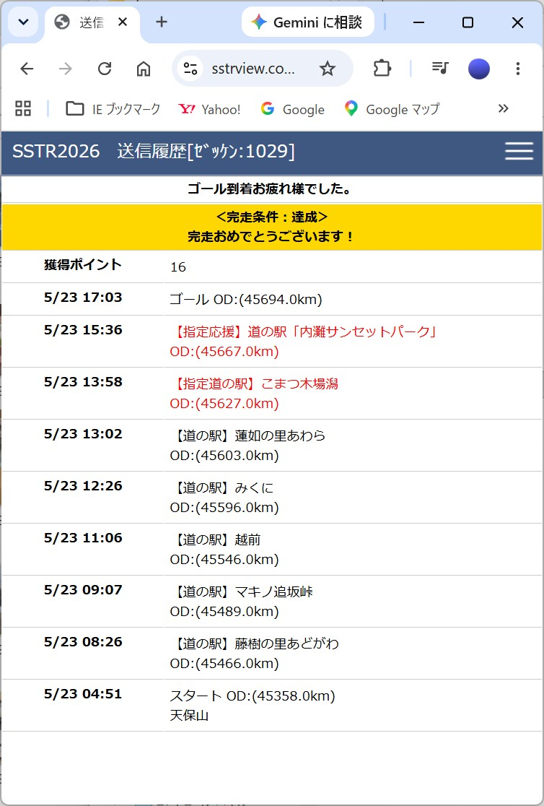
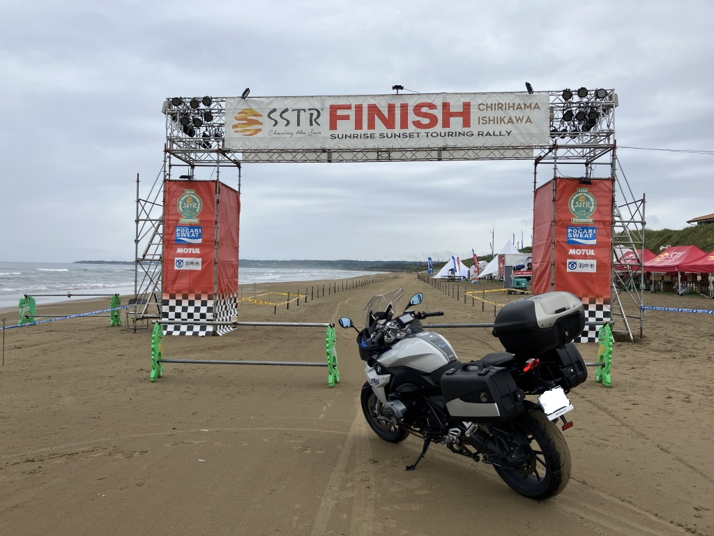
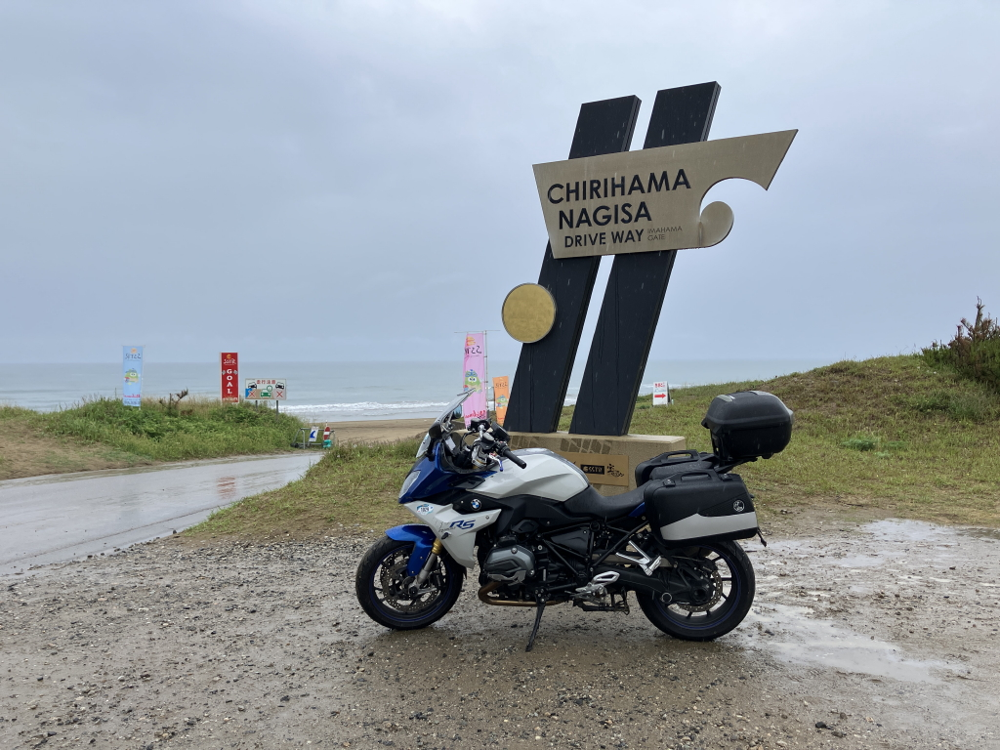
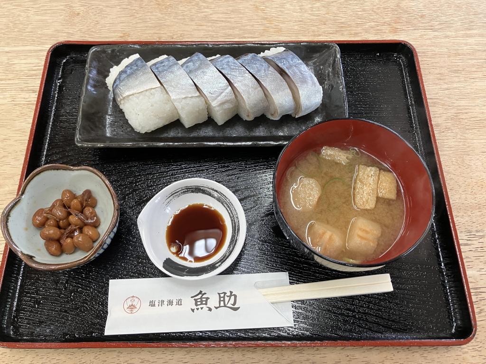
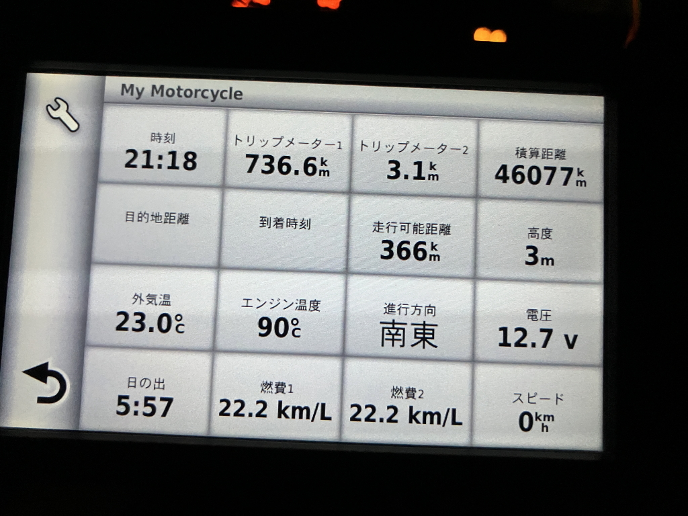

＜ SSTR2026 ＞
SSTRというバイクのイベントに参加しました。
日の出とともに日本海側以外の海岸からスタートし、
日没までに能登半島の千里浜にゴールするラリーです。
去年と一昨年は雨だったのでほとんど写真をとっておらず、ここにも上げてなかったです。

【1日目・5月23日】
スタートは天保山です。
日の出、4:50にスタートです。

道の駅越前で海鮮丼をいただきました。うまい！

金沢の箔一で金箔ソフトをいただきました。
前にも食べましたが金箔の味はないですね。食べると普通のソフトクリーム。

千里浜に着きました。
夕日がきれいな海岸なのですが、残念ながら曇っています。

今日走ったルートです。

日没までに間に合いました。
4:51天保山をスタート、17:03千里浜に到着。
今回は一緒に行った友人が110ccのカブを買ったので、高速道路に乗れず。
全部下道で来たので12時間かかりました。。
今日は近くの民宿に泊まりました。

【2日目・5月24日】
当日はゴールはバイクがいっぱいで自分では写真が取れないので
翌朝、改めてゴールのところにやってきました。

こちらは千里浜の入口です。

帰り道、琵琶湖の北側にある道の駅 塩津海道 あぢかまの里で鯖寿司をいただきました。

今回は2日で、往復736km走りました。
おわり